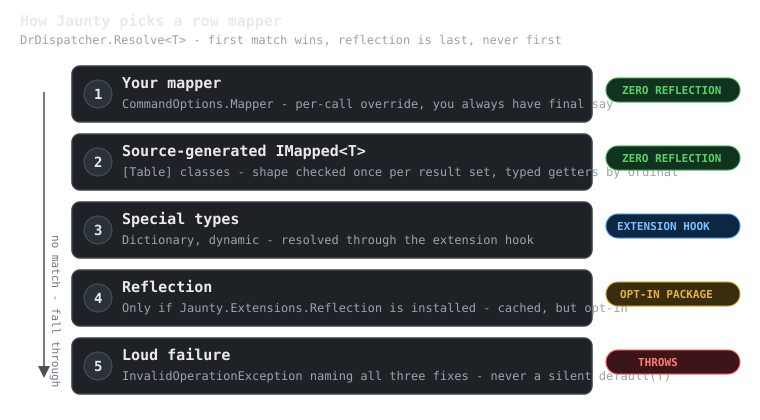

Why Jaunty (and Why Not)
Jaunty is a micro-ORM for .NET: you write SQL, it gives you objects back, and it stays out of the way. That much it shares with Dapper. The difference is a set of deliberate design choices that catch bugs earlier and cost less at runtime. This page is the honest version of the pitch: what problems Jaunty solves, what it refuses to solve, and how to decide quickly whether it belongs in your stack.
The problems Jaunty solves
Silent mapping drift. Most micro-ORMs map whatever columns happen to match and quietly default the rest. Rename a column and your Order.Total is 0 in production, not an error. Jaunty's Query<T> is strict by default: every public writable property must have a matching column, or you get an exception at the call site, in development, with the property named. When you genuinely want a projection, you say so with QueryPartial<T> - the loose behavior is opt-in, never the default.
The reflection tax. Jaunty resolves row mappers through a fixed ladder, and reflection is the last rung, not the first. See the diagram below - this is the design decision most users never notice, and the reason Jaunty works under Native AOT where reflection-based mappers break.
Allocation overhead. Measured against Dapper, EF Core, RepoDb, and linq2db in the in-repo benchmark suite, Jaunty is the lowest-allocating of the compared ORMs and competitive with Dapper on throughput (see the quality section for the published benchmark reports - the claims here are measured, not aspirational; the full numbers live in docs/05-quality/reports/BENCHMARKS-2026-07-04.md in the repository).
Slow bulk writes. Jaunty.Extensions.Reflection routes 100+ row operations to native bulk APIs per provider: SqlBulkCopy on SQL Server, binary COPY on PostgreSQL, chunked multi-row INSERT on MySQL/MariaDB, and a prepared-statement loop on SQLite (where "clever" bulk paths measured slower than the simple one, so Jaunty does the simple one).
Observability as an afterthought. Interceptors (LoggingInterceptor, AuditInterceptor, or your own), slow-query thresholds, and DiagnosticSource integration are built in - you can see every SQL statement, timing, and parameter without wrapping the library.
The mapper resolution ladder
When Jaunty needs to turn a DbDataReader row into your T, it tries five things in order. The first three involve zero reflection; the fourth exists only if you explicitly install it.

Three details worth knowing:
- Your mapper always wins. Step 1 means you can take over row materialization for any single call without configuring anything globally.
- Generated mappers only serve strict mode. A projection may omit columns the generated mapper assumes exist, so
QueryPartial<T>deliberately skips step 2 rather than risk reading a column that is not there. - Failure is loud and specific. If nothing can map your type, Jaunty throws with the three ways to fix it. No silent
default(T), ever.
What Jaunty deliberately does not do
If you need these, Jaunty is the wrong tool, and that is by design:
- No LINQ-to-SQL translation. You write SQL. If you want the compiler to write SQL for you, use EF Core.
- No change tracking, unit-of-work, or identity map. Objects are plain data. You decide what to save and when.
- No lazy loading. Every query is explicit. N+1 problems are visible in your code, not hidden in a proxy.
- No migrations engine. Your schema lifecycle is your own (though the sibling product JauntyQ understands migration scripts at build time - see below).
- Not open source. Jaunty is a commercial product: binaries ship under the ISL-EULA (the license grant is tied to your order), and source access at higher tiers is governed by the ISL-R inspection license. See pricing - there is a 30-day full trial. If OSS licensing is a hard requirement, use Dapper - it is a fine library and this page will not pretend otherwise.
There is a feature-by-feature comparison with Dapper and EF Core in the repository README.
Jaunty or JauntyQ?
Jaunty has a sibling: JauntyQ moves the entire ORM to compile time. Your SQL lives in .sql files, is validated against a committed schema snapshot during the build, and becomes generated C# with typed ordinal getters - a renamed column is a build error, not a production incident.
Rule of thumb: JauntyQ when your queries are known at build time and you can commit a schema snapshot; Jaunty when you need runtime flexibility, older TFMs, or a drop-in Dapper upgrade path. They share a philosophy - SQL is yours, mapping is strict, reflection is a last resort - so moving between them is a change of mechanics, not mindset.
Next steps
- Quick start - install and first query in five minutes.
- Learn by doing - a guided tutorial and coding exercises.
- Design decisions - why strict mapping, why
CommandOptions, why parsed positional parameters: see the "Design Decisions" section of the repository README.